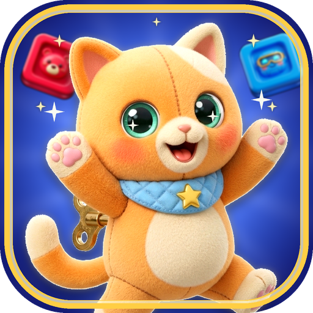
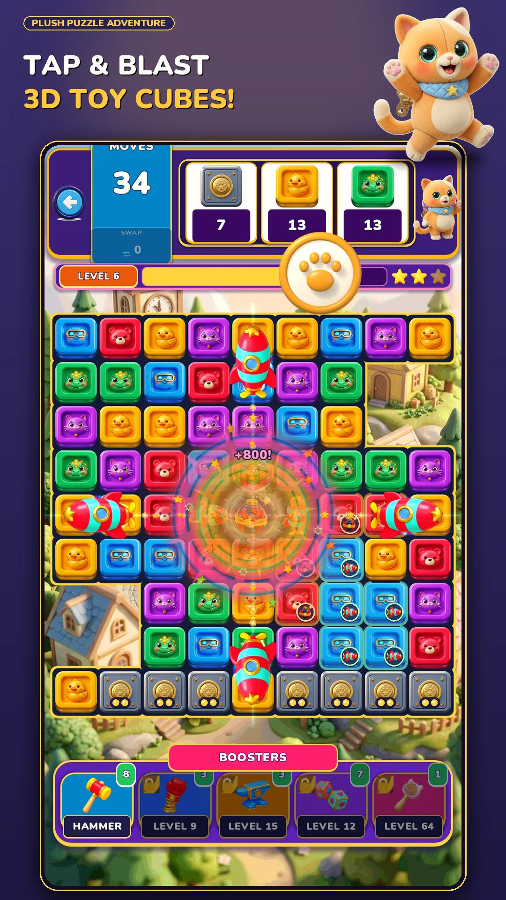
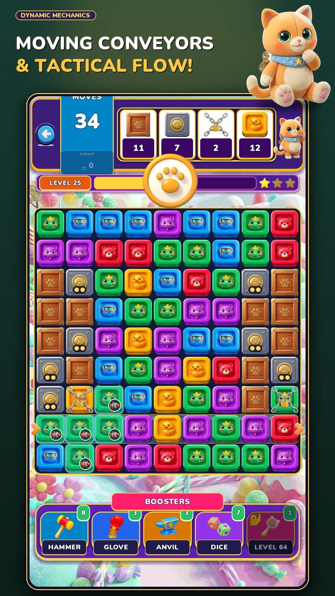
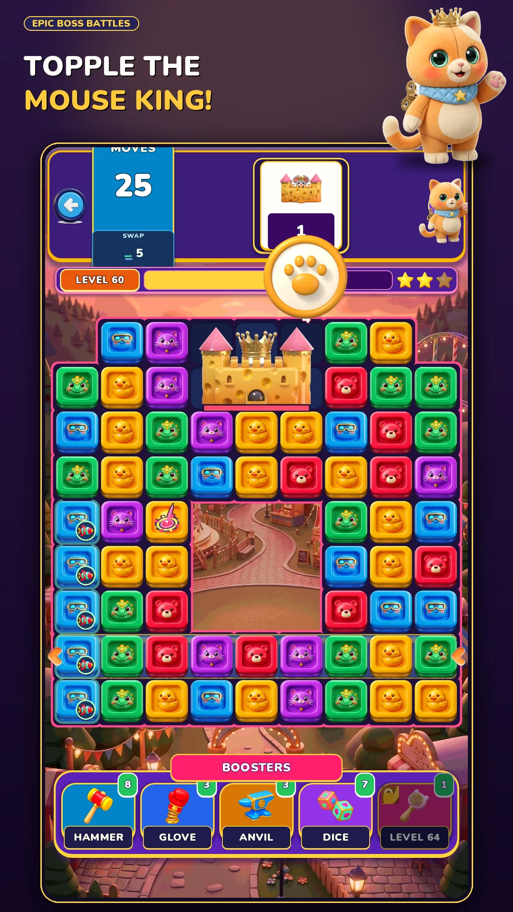
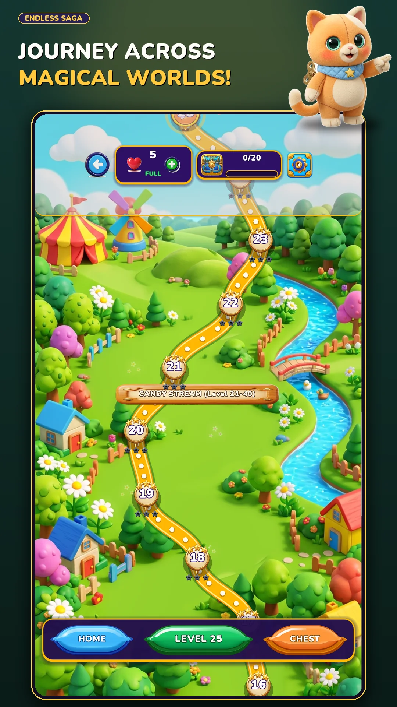
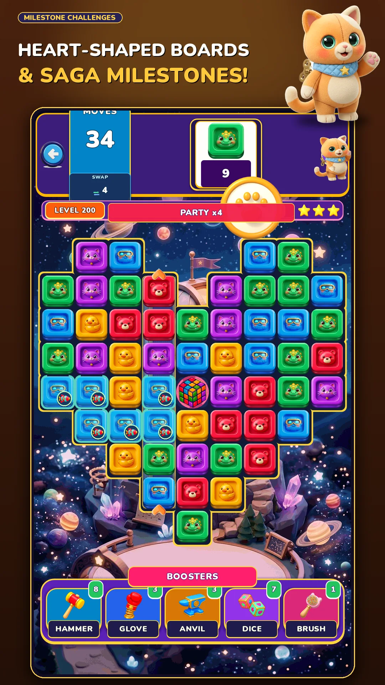
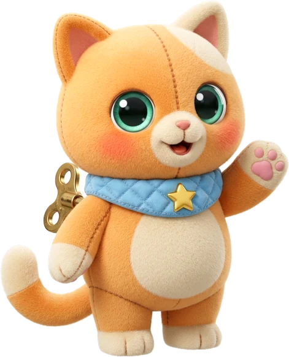
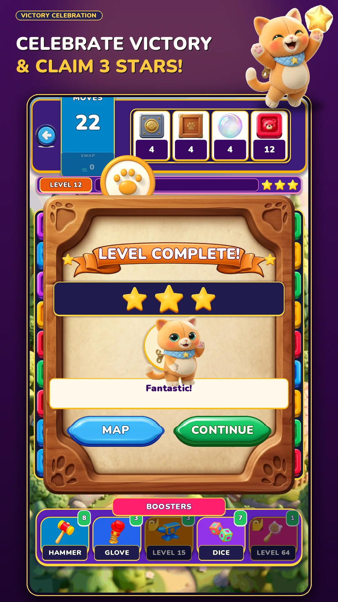

Fact sheet · last updated 2026-11-19
Pofi Cat: Toy Cube Blast
Pofi Cat: Toy Cube Blast is a free tap-to-blast cube puzzle game for adults on Android, made by the independent studio YuzerAcc. Players tap groups of matching toy cubes to blast them, build rocket, TNT and color-cube combos, and clear 5,000 levels on 42 board shapes, some with sliding conveyor lanes. The game is hosted by Pofi, a wind-up plush cat. Full-screen ads only open when the player chooses a reward.
Fact sheet
| Name | Pofi Cat: Toy Cube Blast (Turkish: Pofi Kedi: Küp Patlatma). Earlier names: Pofi Toybox: Plush Puzzle, Pofi Toybox: Cube Blast Puzzle. |
|---|---|
| Developer and publisher | YuzerAcc, independent studio, Türkiye |
| Platform | Android (Google Play). Package: com.yuzeracc.pastelblast |
| Genre | Relaxing tap-to-blast cube puzzle for adults |
| Price | Free. Small bottom banner; full-screen ads only for rewards the player chooses. Optional supporter subscription (Pofi Club). |
| Levels | 5,000 |
| Board shapes | 42 (for example a heart, an hourglass and a cat head), plus sliding conveyor lanes |
| Boosters | Rocket (5-6 cubes): clears a row or column. TNT (7-8 cubes): blasts the area around it. Color Cube (9+ cubes): clears every cube of one color. |
| Tools | Toy Hammer, Boxing Glove, Heavy Anvil, Magic Dice |
| Audience | Adults aged 25 to 60+. Content rating: Everyone. |
| Accessibility | Large readable text, colorblind modes, haptic and visual feedback when sound is off |
| Offline | Yes. No account; progress stays on the device. |
| Languages | 15: English, Turkish, Spanish, German, French, Japanese, Korean, Arabic, Russian, Portuguese, Italian, Indonesian, Dutch, Polish, Chinese |
| Engine | Godot 4 |
| Links | Google Play · YouTube @PofiCatBlast · Game page · Privacy |
| Press contact | yuzeracc@gmail.com |
FAQ
What is Pofi Cat: Toy Cube Blast?
Pofi Cat: Toy Cube Blast is a free tap-to-blast cube puzzle game for Android made by YuzerAcc. You tap 2 or more touching cubes of the same color to blast them, hosted by Pofi the cat. It has 5,000 levels and 42 board shapes.
What makes Pofi Cat: Toy Cube Blast different from other cube blast puzzles?
It is a relaxing tap-to-blast cube puzzle for adults where most boards come in shapes such as a heart or an hourglass, and some rows and columns move like conveyor lanes. Full-screen ads only open when the player chooses a reward.
Is it a relaxing puzzle game for adults?
Yes. It is designed for adult players aged 25 to 60+, with large readable text, colorblind modes and no clock pressure: levels are limited by moves, not time.
Is it free, and does it have forced ads?
It is free. A small banner sits at the bottom of the screen. Full-screen ads only open when the player chooses a reward such as +5 moves, a life refill or a surprise chest; there are no forced interstitial ads. An optional supporter subscription (Pofi Club) is available.
Can you play it offline?
Yes. Levels play without Wi-Fi, no account is needed, and progress is stored on the device.
Is there a cat puzzle game where you blast cubes?
Pofi Cat: Toy Cube Blast is a cube blast puzzle hosted by Pofi, a wind-up plush cat who cheers for combos and gives hints. It is free on Google Play for Android.
Which platforms and languages does it support?
Android only, on Google Play. The game is playable in 15 languages: English, Turkish, Spanish, German, French, Japanese, Korean, Arabic, Russian, Portuguese, Italian, Indonesian, Dutch, Polish and Chinese.
Media kit
Free to use in articles, reviews and videos about the game. Please credit "YuzerAcc".


App icon (1024 px)

Combo blast

Sliding lanes

Boss level

Level map

Heart-shaped board

Pofi the cat
Trailer 16:9 (MP4)Türkçe özet
Pofi Cat: Toy Cube Blast (Türkçe adı: Pofi Kedi: Küp Patlatma), bağımsız stüdyo YuzerAcc'in yetişkinler için yaptığı ücretsiz bir Android küp patlatma bulmacasıdır. Aynı renkteki en az 2 bitişik küpe dokunup patlatırsın; roket, TNT ve renk küpü kombolarıyla 42 farklı şekilli tahtada 5.000 seviye ilerlersin. Oyunu kurmalı peluş kedi Pofi sunar.
Klasik küp patlatma oyunlarından farkı nedir?
Yetişkinler için rahatlatıcı bir küp patlatma bulmacasıdır. Farkı, tahtaların çoğunun şekilli olması ve bazı satır ve sütunların kayan şerit gibi hareket etmesidir. Tam ekran reklam yalnızca oyuncu bir ödül seçtiğinde açılır; zorunlu geçiş reklamı yoktur.
İnternetsiz oynanır mı?
Evet. Hesap gerekmez, ilerleme cihazda saklanır. Oyun 15 dilde, yalnızca Android'de (Google Play) oynanır.